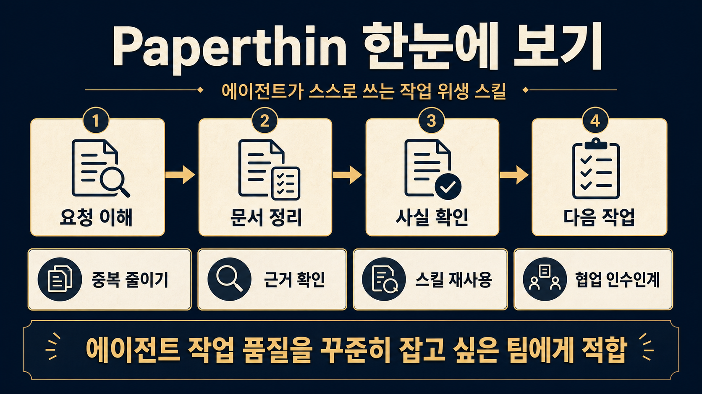

GitHub 저장소 분석
LilMGenius/
LilMGenius/
paperthin
AI 에이전트가 산출물을 계속 깨끗하고 사실에 맞게 유지하도록 돕는 plain Markdown 스킬 묶음이다. 특정 에이전트에 갇히기보다 Claude Code, Codex, Hermes 같은 여러 환경에서 재사용하는 작업 위생 레이어에 가깝다.
한 줄로 보면
“에이전트가 더 만들기 전에, 먼저 읽고 줄이고 확인하게 만드는 스킬 카탈로그”
문제AI가 프로젝트에 파일, 옵션, 설명을 계속 더해 산출물이 점점 지저분해지는 상황을 겨냥한다.
해결re0, readchk, factchk, shower 같은 작은 스킬을 통해 읽기, 정리, 검증, 인수인계를 반복 가능한 반사 동작으로 만든다.
결과문서형 워크플로, 에이전트 운영 규칙, 리뷰 체크리스트를 팀 단위로 더 일관되게 굴릴 수 있다.
작동 흐름
코드를 실행하는 앱이라기보다, 에이전트가 읽고 따르는 Markdown 스킬 패키지다.
1. 설치npx skills add로 에이전트 환경에 스킬을 연결한다.
2. 호출사용자가 이름으로 부르거나 모델이 상황에 맞게 스킬을 꺼낸다.
3. 정리중복 제거, 사실 확인, SSOT 정리, 문서 재작성 같은 hygiene 절차를 수행한다.
4. 누적한 번 끝난 작업의 교훈을 다음 작업에 넘기도록 설계돼 있다.
어디에 유용한가
에이전트 협업 팀여러 AI 도구를 섞어 쓰면서 산출물 품질 기준을 통일하고 싶은 팀에 맞다.
문서 중심 프로젝트README, 스킬, 운영 문서, 계획서처럼 오래 남는 글의 drift를 줄이는 데 강하다.
반복 개선 루프작업이 한 번으로 끝나지 않고 다음 iteration으로 이어지는 연구, 제품, 교육 콘텐츠 제작에 잘 맞는다.
확인한 근거
구조skills/depth, breadth, coil, mesh 아래 28개 SKILL.md가 있고 README와 plugin.json이 같은 카탈로그를 가리킨다.
검증validate-skills, skill refs, relative links, catalog sync, deploy-home drift guard를 로컬에서 실행해 통과를 확인했다.
성숙도v0.17.4 릴리스, MIT 라이선스, GitHub stars 751개, forks 78개로 실험용을 넘어 실제 관심을 받고 있다.
도입 판단
바로 시도해볼 만한 경우에이전트가 만든 문서가 자주 bloating 되거나, 여러 도구 사이에서 같은 작업 규칙을 공유하고 싶을 때.
먼저 확인할 점팀이 쓰는 에이전트가 SKILL.md를 어떤 방식으로 읽는지, 그리고 자동 호출 규칙이 기존 워크플로와 충돌하지 않는지 작은 저장소에서 시험하는 게 좋다.